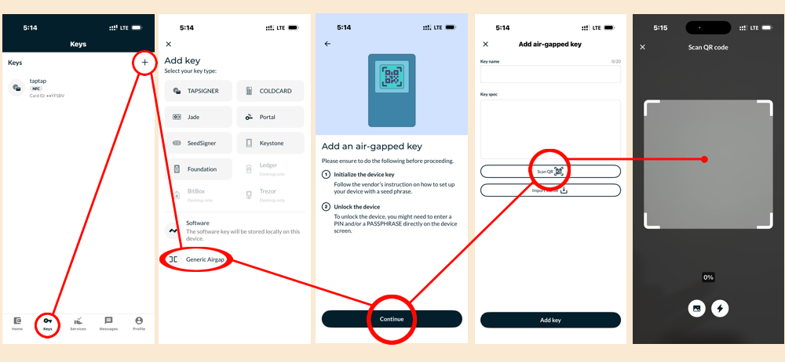
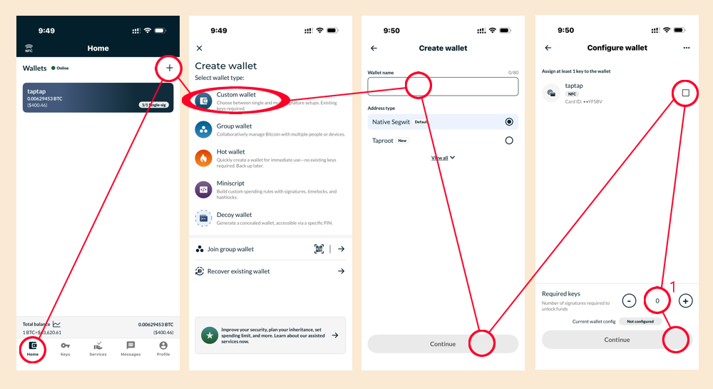
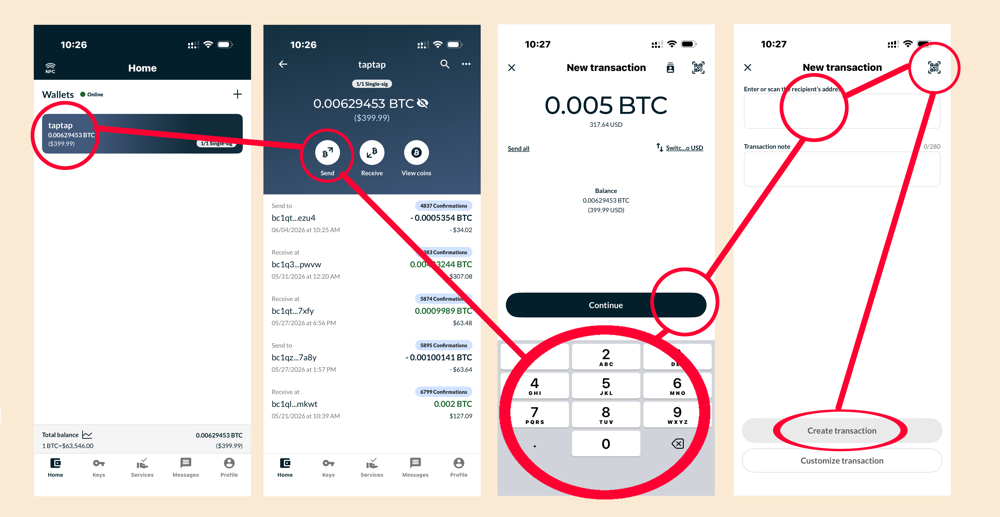
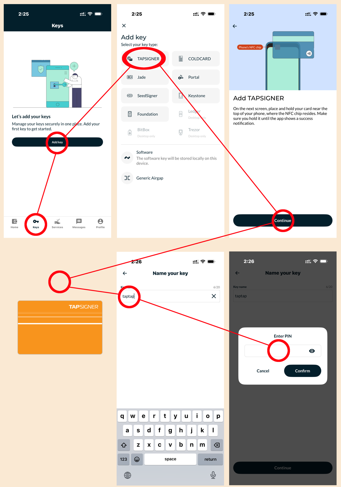
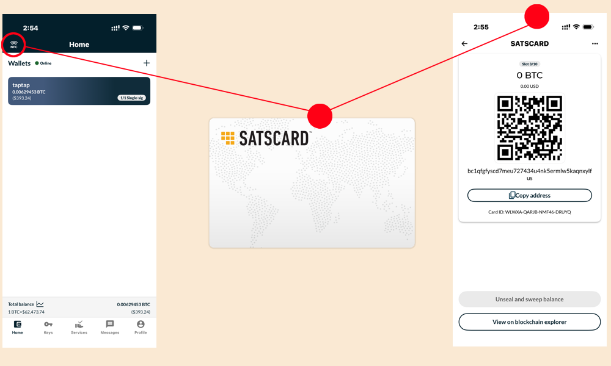
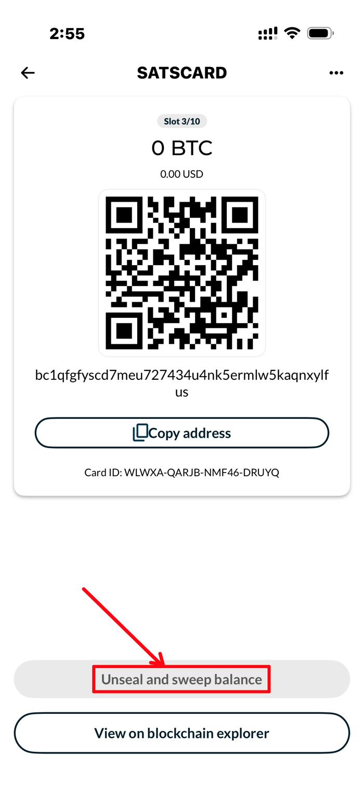
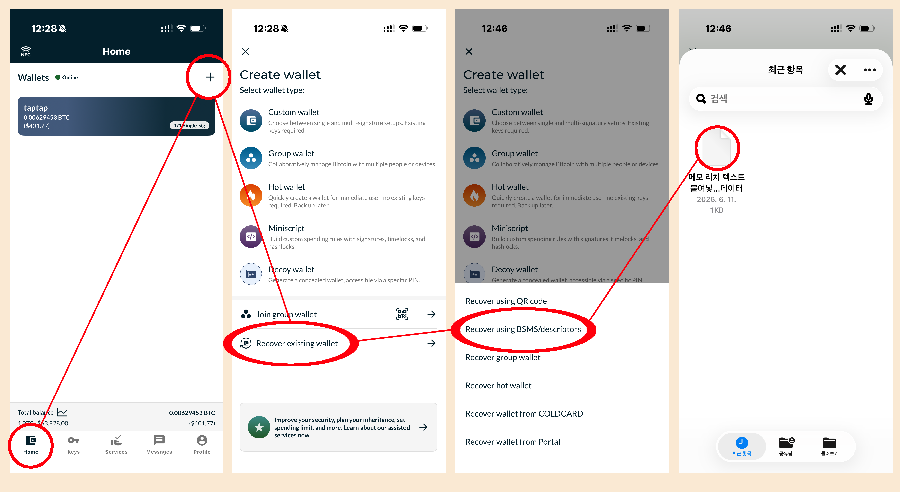

// NUNCHUK MANUAL
NUNCHUK GUIDE
Watch-only app, Nunchuk의 설정 가이드
AIR-GAPPED ) Nunchuk Air-gapped Registration
에어갭 서명기기를 USB·NFC 연결 없이 QR 코드만으로 Nunchuk 앱에 키로 등록합니다. 서명기기는 등록 과정 내내 인터넷과 완전히 분리된 상태(에어갭)를 유지합니다.

-
INunchuk 앱 실행 → 키 관리 (또는 지갑 생성 화면)
-
II키 추가 (Add Key) TOUCH
-
III연결 방식에서 AIR-GAPPED 선택
-
IV하드웨어 지갑 목록에서 사용 중인 기기 선택
-
VQR 스캔 화면이 나오면 대기
-
I설정 메뉴에서 Export Wallet 기능 진입
-
II지갑 소프트웨어 목록에서 Nunchuk 선택
-
III계정(Account) 번호 확인 후 ENTER
-
IVQR 버튼 클릭 — 화면에 BBQr 코드 표시
Nunchuk 앱 카메라로 서명기기 화면의 BBQr을 스캔하면 자동으로 마스터 핑거프린트(MFP)와 확장 공개키(XPUB)가 임포트됩니다.
△ 스캔 완료 후 Nunchuk에 표시된 MFP가 서명기기 본체(설정 화면)의 MFP와 정확히 일치하는지 반드시 확인하십시오.
-
I스캔 완료 → 키 이름 입력 (예: 메인 서명기기)
-
II확인 → 키 목록에 등록 완료
◆ 서명기기를 분실·초기화하지 않는 한, 같은 니모닉이면 항상 같은 MFP·XPUB가 나옵니다.
◆ 키 제거·재등록은 키 / 지갑 제거 항목을 참고하십시오.
NUNCHUK ) Wallet Creation
등록된 키(에어갭 서명기기 등)로 실제로 주소를 만들어내는 싱글시그 지갑을 생성합니다. 멀티시그 지갑 생성은 별도 항목에서 다룹니다.

-
I홈 화면에서 지갑 추가 (Add Wallet) TOUCH
-
II지갑 이름 입력
-
III지갑 유형에서 싱글시그 (1개 키) 선택
-
IV등록된 키 목록에서 사용할 키 선택
-
V주소 형식 확인 (기본값 Native SegWit · bc1q...) 후 생성
◆ 지갑을 잘못 만들었거나 더 이상 쓰지 않는다면 키 / 지갑 제거 항목을 참고하십시오.
NUNCHUK ) Removing Wallets & Keys
Nunchuk은 와치온리 앱이므로, 지갑이나 키를 제거해도 서명기기 본체의 니모닉·개인키에는 아무 영향이 없습니다. 단순히 Nunchuk 앱에서 해당 주소·공개키 정보를 더 이상 추적하지 않겠다는 의미이며, 같은 키·같은 구성으로 다시 만들면 언제든 동일하게 복원됩니다.
지갑을 삭제해도 키(니모닉)에는 아무 영향이 없습니다. 같은 키 조합·같은 파생 경로로 지갑을 다시 만들면 동일한 주소들이 그대로 복원됩니다 (결정론적 파생).
△ 복원을 대비해 삭제 전 지갑 디스크립터(설정 파일)를 따로 백업해 두는 것을 권장합니다.
-
I지갑 상세 → 설정
-
II지갑 삭제 (Delete Wallet) TOUCH
-
III잔액이 남아있다면 먼저 전송 후 삭제 권장
Nunchuk은 와치온리이므로, 키를 제거해도 서명기기 본체의 니모닉·개인키에는 아무 영향이 없습니다. 단순히 Nunchuk 앱에서 "이 키의 공개키 정보를 더 이상 추적하지 않겠다"는 의미입니다.
-
INunchuk → 키 관리 → 제거할 키 선택
-
II키 삭제 (Remove Key) TOUCH
-
III해당 키가 사용 중인 지갑이 있다면 먼저 지갑에서 제외해야 삭제 가능
◆ 재등록은 키 등록 항목의 01~03 과정을, 지갑 재생성은 지갑 만들기 항목을 참고하십시오.
◆ 서명기기를 분실·초기화하지 않는 한, 같은 니모닉이면 항상 같은 MFP·XPUB가 나옵니다.
NUNCHUK ) Transaction & Signing
Nunchuk(와치온리)에서 거래서(PSBT)를 만들고, QR코드로 서명기기에 전달해 서명받은 뒤, 서명된 결과를 다시 QR로 받아와 네트워크에 전송(브로드캐스트)합니다. 전 과정에서 서명기기는 인터넷에 연결되지 않습니다.

-
I지갑 상세 화면에서 보내기 (Send) TOUCH
-
II받는 주소, 금액 입력
-
III수수료(sat/vB) 확인 후 거래 생성
-
IV서명하기 (Sign) → 연결 방식 AIR-GAPPED 선택 → QR(PSBT) 표시
-
I메인 메뉴 → Scan Any QR Code (또는 Ready To Sign)
-
IINunchuk 화면의 PSBT QR 스캔
-
III화면에 표시된 받는 주소 · 금액 · 수수료를 직접 확인
-
IV이상 없으면 ENTER로 서명 승인
-
V서명 완료 → QR 버튼으로 서명된 PSBT 표시
△ 화면의 주소·금액은 반드시 서명기기 본체에서 직접 확인하십시오 — "Trust the device, not the screen".
-
INunchuk 카메라로 서명기기의 서명된 PSBT QR 스캔
-
II서명 확인 후 브로드캐스트 (Broadcast) TOUCH
-
III거래 내역에서 TXID 확인
TAPSIGNER ) NFC Signing Card
탭사이너는 카드 안에 개인키를 직접 보관하는 NFC 서명 카드입니다. QR 화면이 있는 서명기기와 달리, 휴대폰에 태그(NFC)하는 것만으로 Nunchuk 앱과 직접 통신합니다.
새 탭사이너는 처음 태그하는 순간 카드 내부에서 개인키가 생성됩니다. 이 개인키는 카드 밖으로 절대 나오지 않습니다.

-
INunchuk → 키 추가 → Tapsigner (NFC) 선택
-
II안내에 따라 카드를 휴대폰 뒷면 NFC 위치에 태그
-
III카드 뒷면 스크래치의 초기 CVC 코드 입력
-
IV원하면 CVC 변경 (6~32자, 이후 서명 시마다 필요)
-
V초기화 완료 → 암호화된 백업 파일 저장 안내 → 키 목록에 등록
△ 백업 파일과 CVC를 함께 잃어버리면 카드 안의 자금에 다시 접근할 방법이 없습니다. 안전한 곳에 별도 보관하십시오.
QR 스캔이 필요한 다른 서명기기와 달리, 탭사이너는 휴대폰에 태그 한 번으로 서명이 끝납니다.
-
INunchuk에서 거래 생성 후 서명하기
-
II서명 방식에서 Tapsigner (NFC) 선택
-
IIICVC 입력
-
IV카드를 휴대폰에 태그 → 자동으로 서명 완료
-
V거래 내역 확인 후 브로드캐스트
Nunchuk에서 키를 제거해도 카드 안의 개인키는 그대로 남아있습니다. (Nunchuk은 와치온리이므로, 삭제는 단순히 앱에서 이 키의 추적을 중단하는 것입니다.)
△ 탭사이너는 니모닉 기반 서명기기처럼 자유롭게 재구성할 수 없습니다 — 카드 분실 시 백업 파일 + CVC가 유일한 복구 수단입니다.
-
INunchuk → 키 관리 → 제거할 키 선택 → 키 삭제
-
II재등록하려면 같은 카드로 CVC 입력 후 다시 스캔
SATSCARD ) Bearer Instrument
세츠카드는 다른 서명기기·탭사이너와 성격이 다릅니다. "내 지갑의 서명키"로 등록하는 게 아니라, 카드를 쥔 사람이 곧 자금의 주인이 되는 실물 지폐 같은 카드입니다. 카드 안에는 10개의 슬롯이 있고, 슬롯마다 고유한 주소·개인키가 따로 있습니다.

-
INunchuk → NFC
-
II카드를 휴대폰에 태그
-
III현재 활성 슬롯의 주소·잔액 표시 (CVC 없이도 조회만은 가능)
이 주소로 비트코인을 보내면, 카드를 실제로 갖고 있는 사람이 그 자금을 갖게 됩니다 — 선물·소액 보관용으로 적합합니다.
카드를 받은 사람이 자금을 실제로 쓰려면, 슬롯을 언실(Unseal)해서 개인키를 노출시킨 뒤 다른 지갑으로 옮겨야 합니다.

-
ISatscard 스캔 화면에서 언실 (Unseal) TOUCH
-
II카드 뒷면의 CVC 입력
-
III개인키 노출 → 잔액을 다른 지갑(서명기기 등)으로 즉시 전송(스윕)
-
IV스윕 완료 → 카드는 자동으로 다음 슬롯으로 이동
△ 언실된 슬롯은 개인키가 이미 노출된 상태이므로 재사용(추가 입금) 금지 — 반드시 스윕 후 폐기하듯 취급하십시오.
◆ CVC를 아는 사람이라면 누구나 언실할 수 있습니다 — 카드+CVC를 함께 보관하지 마십시오.
◆ 10개 슬롯을 모두 사용하면 카드에 새 슬롯이 없어 더 이상 입금용으로 못 씁니다.
◆ 장기·거액 보관에는 부적합합니다 — 소액 선물, 테스트, 임시 보관 용도로 사용하십시오.
NUNCHUK ) Multisig Wallet Creation
멀티시그는 N개의 서명 키 중 M개가 모여야만 거래가 가능한 지갑입니다 (예: 2-of-3). 한 기기가 분실·해킹되어도 자금이 안전하며, 각 키는 서로 다른 하드웨어(서명기기, 탭사이너 등)에 나눠 보관하는 것이 원칙입니다.
△ 참여하는 각 서명기기는 반드시 서로 다른 니모닉이어야 합니다 — 같은 기기를 중복 사용하면 분산 보관의 의미가 없습니다.
-
I홈 화면에서 지갑 추가 (Add Wallet) TOUCH
-
II지갑 이름 입력 → 지갑 유형에서 멀티시그 선택
-
III서명 조건 설정 (예: 2/3, 3/5 등 M-of-N)
-
IV등록된 키 목록에서 N개의 서명자를 순서대로 선택 (부족하면 먼저 키 등록 항목대로 키 추가)
-
V주소 형식 확인 (기본값 Native SegWit Multisig · bc1q...) 후 생성
서명기기가 서명 요청을 받았을 때 "내가 아는 멀티시그 지갑에서 온 요청"임을 확인하려면, 지갑 구성(디스크립터)을 참여하는 모든 서명기기에도 각각 등록해야 합니다.
-
INunchuk 지갑 상세 → 내보내기 (Export) → QR(BBQr) 또는 파일로 표시
-
II서명기기 → 멀티시그 지갑 가져오기 (Import) 메뉴 진입
-
IIINunchuk 화면의 QR 스캔 (또는 파일 불러오기) → 지갑 이름 · M-of-N 구성 확인 후 저장
-
IV참여하는 나머지 서명기기에도 I~III 과정 반복
각 서명기기의 멀티시그 지갑 메뉴에서 지갑 이름·M-of-N·수령 주소가 모두 동일하게 표시되는지 확인하십시오.
△ 본격적인 입금 전, 소액을 먼저 보내고 정상적으로 서명·전송되는지 테스트하는 것을 권장합니다.
DESCRIPTOR ) Wallet Restore
디스크립터는 멀티시그 지갑의 "설계도"입니다 — M-of-N 구성, 각 서명자의 마스터 핑거프린트(MFP)·확장 공개키(XPUB)·파생 경로가 담긴 표준 텍스트입니다. 앱을 재설치했거나 다른 기기에서 같은 지갑을 그대로 재현할 때 사용합니다.
지갑 생성 시 Nunchuk·서명기기가 자동으로 이 정보를 만들어냅니다. 디스크립터만 있으면 주소·잔액 조회(와치온리)는 어느 기기·어느 앱에서든 동일하게 복원됩니다.
△ 디스크립터에는 개인키·니모닉이 들어있지 않습니다 — 이것만으로는 자금을 옮길 수 없습니다.

-
I넌척이 깔려있는 핸드폰에 디스크립터(text) 파일을 넣어둔다 (아이폰의 경우 '파일(File)' 앱)
-
II홈 화면에서 지갑 추가 (+) → 가져오기 (Recover existing wallet) 선택
-
III디스크립터 파일 업로드 (Recover using BSMS/descriptors) 선택
(QR 스캔, 서명기기에서 직접 불러오기로도 디스크립터를 불러올 수 있습니다.) -
IV파일 선택 창에서 디스크립터를 선택 → 가져오기
-
V지갑 목록에 복원 완료 — 기존 주소·잔액 내역이 그대로 표시됨
-
VI실제로 서명하려면 각 키를 키 등록 항목대로 개별 재등록해야 함 (서명기기는 니모닉만 살아있으면 항상 동일한 키로 복원)
◆ 디스크립터 분실에 대비해 지갑 생성 직후 여러 곳(클라우드·프린트 등)에 백업해 두십시오.
◆ 디스크립터만으로 잔액 조회는 가능하지만, 서명에는 반드시 원래 니모닉을 가진 서명기기가 필요합니다.
◆ 서명 단계까지 정상 동작하려면 각 서명기기에도 멀티시그 · 처음부터 만들기 항목의 02번처럼 지갑이 등록되어 있어야 합니다.
기본 니모닉 (12글자 or 24글자) 에 나만의 비밀 문장을 추가하여 새로운 지갑을 만듭니다.
기존 지갑에 비밀번호를 추가하는 게 아닙니다.
기존과 다른 새로운 지갑을 만드는 겁니다.
△ 패프를 설정하면, 지갑이 새롭게 만들어진다.
당신이 니모닉을 생성했습니다. 지갑이 만들어졌죠.
이 지갑 이름을 철수 라고 지었습니다.
당신은 만든 지갑에 패스프레이즈로 abc 라고 적었습니다.
그럼 새로운 지갑 영희가 만들어집니다.
이번엔 패스프레이즈에 aaaaa 라고 적었네요.
그러면 또 새로운 지갑 광수가 만들어집니다.
△ 패스프레이즈로 지갑을 무수히 많이 만들 수가 있습니다.
패스프레이즈에게 틀렸다 는 개념은 없습니다.
타이핑을 잘못 쳤다면 새로운 지갑이 또 하나 만들어질 뿐입니다.
또한 대다수의 콜드월렛은 한번 전원을 껐다 키면,
패스프레이즈를 입력하기 전의 기본 니모닉 지갑으로 돌아옵니다.
그럼 다수개의 지갑을 만들었다면 어떻게 구분할 수 있을까요?
MFP — Master Fingerprint 지갑의 고유식별값
MFP 는 지갑을 구분하기 위해 사용됩니다.
이해하기 쉽게 말하자면,
라고 생각하면 됩니다.
위에서 언급한 철수 영희 광수 라고 언급한 지갑 이름 말이죠.
MFP 는 콜드월렛과 와치온리앱 두 군데서 모두 표시됩니다.
△ 양쪽의 MFP 가 일치한다면, 같은 지갑이 등록된 것.
-
I패스프레이즈는 틀렸다는 개념이 없다. 계속 새로 만들어질 뿐이다.
-
II패스프레이즈는 콜드월렛에 저장 안된다. (재부팅 후 매번 새로 쳐야한다.)
-
III패스프레이즈를 잊어먹으면 끝장이다.
◆ THE B SOCIETY 의 멤버는 모두 '팔지 않겠다' 고 약속한 호들 전용 지갑을 따로 두고 있습니다.
◆ 혹은 가족 구성원의 지갑을 각각 만들고 싶을 때, 니모닉을 공유하고 패스프레이즈만 서로 다르게 하여 각자 지갑을 관리하는 것도 방법입니다.
◆ 정수로 맞춘 메인 지갑, 호들 지갑, 잔돈 지갑으로 구분할 수도 있습니다.
◆ 패스프레이즈를 이용해 추가 지갑을 만들었다면, 기본 니모닉 지갑과 패스프레이즈로 생성한 지갑 두 개를 모두 watch-only app 에 등록해 두길 추천합니다. (혼동 방지를 위해)